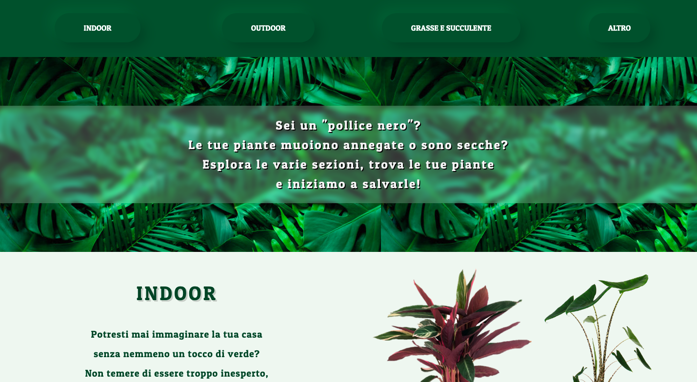
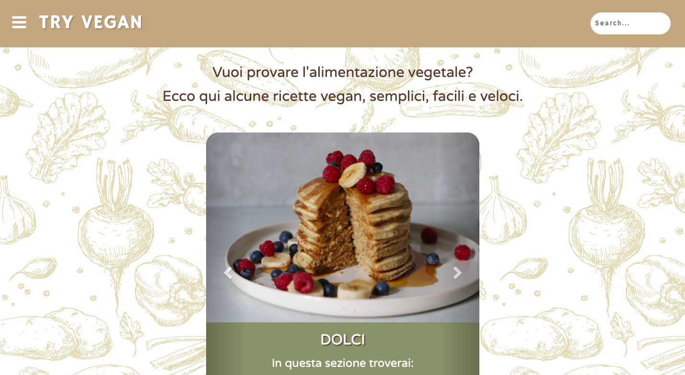
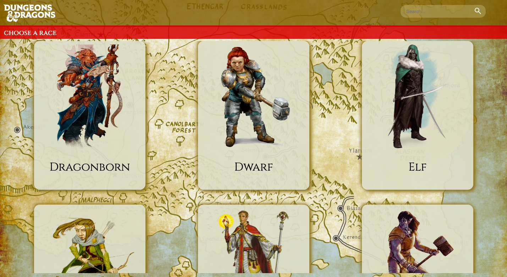

I MIEI LAVORI
Black Thumb
Una piccola guida per i "pollici neri" che volgiono una casa piena di piante

Try Vegan
Ricette semplici, facili e veloci per coloro che vogliono approcciarsi all'alimentazione vegetale

Ricette semplici, facili e veloci per coloro che vogliono approcciarsi all'alimentazione vegetale
D&D - Races
Essendo nerd non potevo non ricreare una lista con i dettagli delle razze di questo famosissimo gioco di ruolo

Essendo nerd non potevo non ricreare una lista con i dettagli delle razze di questo famosissimo gioco di ruolo
Equilibrium
Ritrovare il proprio equilibrio psicofisico, con un mix di allenamenti alla portata di tutti, praticando diverse discipline
Ritrovare il proprio equilibrio psicofisico, con un mix di allenamenti alla portata di tutti, praticando diverse discipline
Back